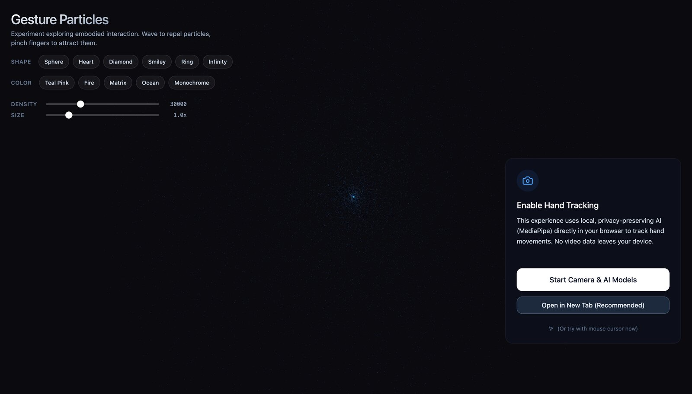
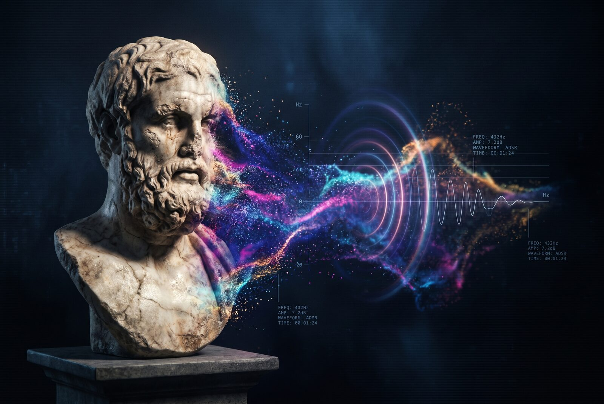

Interaction Designer & Creative Technologist building human-AI collaboration interfaces, conversational experiences and interactive installations
I'm an interaction designer with 12+ years experience in visual communication, specializing in human-AI collaboration interfaces and interactive installations.
I bridge design thinking with technical implementation—creating experiences that make complex AI systems accessible and engaging. From training custom LoRA models to building gesture-controlled visualizations, I work across the full spectrum from concept to deployed system.
I recently completed the CAS AI for Creative Practices (ZHdK / UniBe), exhibiting Mirror Mirror in July 2026, and continue to teach sound design—exploring how algorithmic systems can create meaningful, responsive experiences that empower users.
An interactive AI mirror that interviews visitors through Mira, a voice-driven AI persona, reading face and voice in parallel—then generating personalized portraits using six custom-trained LoRA models spanning utopian to dystopian artistic styles. Exhibited at ZHdK / UniBe in July 2026. How does AI categorize us? What does algorithmic seeing reveal about human identity?
An end-to-end blocked-card journey for a Swiss retail bank assistant. One entry point resolves six different ways a card can stop working—backed by a non-negotiable verification gate, an escalation ladder, and repair states for mis-routing, failed verification, and social-engineering pressure. Grounded in Wizard-of-Oz think-aloud sessions with real banking customers.
An LLM-assisted mortgage pre-check for the Swiss residential market, where the advice boundary is enforced by the system, not by the model’s good behaviour. Every number comes from a deterministic tool call, the assistant can reach only three conclusions, and handover to a human advisor is triggered by rules—not by the model’s judgement.
Real-time interactive visualizations that respond to hand movements, combining MediaPipe computer vision with Three.js rendering. Explores embodied interaction and natural UI paradigms—how can we control digital systems through gesture rather than clicks?

Cross-modal sensory experiences mapping emotional analysis to color palettes and sound synthesis. Interactive installations combining Pure Data, Max/MSP audio processing with visual systems—making abstract AI sentiment analysis tangible through multi-sensory design.
